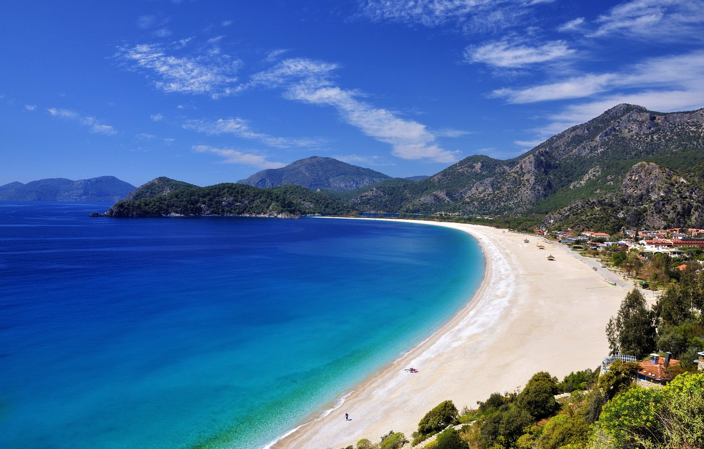
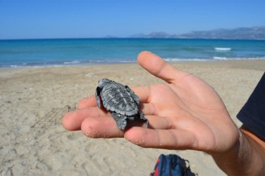
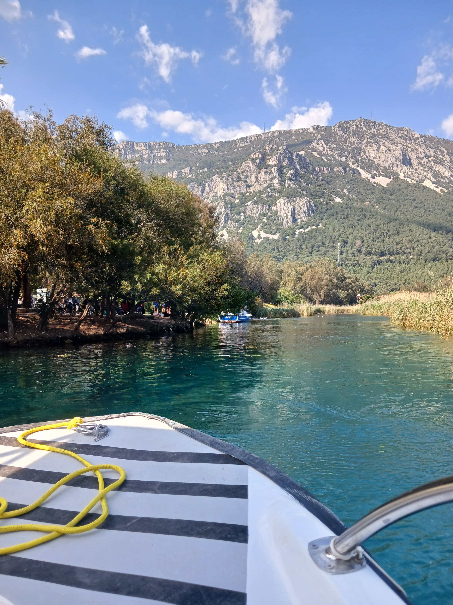
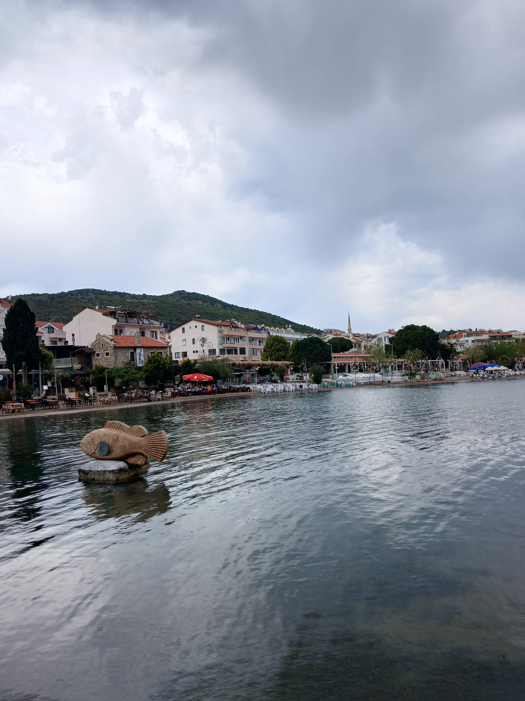

📌Rota Ege'm
Uzun zamandır Ege bölgesinde kamp yapmak istiyordum ve bu fırsatı yakaladım. Önce bir motokaravan aldım sonra sevdiğim arkadaşlarımla yola koyuldum merak ediyor musun o zaman sayfanın sonuna kadar okumaya devam et.

Fethiye!
2024 Nisan ayının başları Adana'dan Fethiye'ye yola koyuldum evet ilk rotam Fethiye. O muhteşem deniziyle meşhur yer deniz mi Ölüdeniz. İMG. Ölüdeniz yakınlarında kamp alanına geldim orada konaklayacaktım yaklaşık 4 gün Fethiye'de kaldım.son gün çevresini gezdim tarihi yerleri gezdim gerçekten harika bir yerdi daha uzun kalmak isterdim ki başka yerleri görmenin gezmenin heyecanını yaşıyordum ve tekrar yola koyuldum sıradaki rota neresi mi.Plajında belli zamanlarda görebileceğin karetta karettaların bulunduğu yer.

Dalyan!
Dalyana gelmiştim 2 gün kaldım. İlk gün sahilde bir hareketlilik göremedim o yüzden karetta karettaları beklemek yerine Dalyan Boğazında tekne turu yaptım doğası harika bir yer :). 2. gün doğumuna uyandım ve evet karetta karettalar yavrular! denizin yolunu bulmaya çalışıyorlardı. Ne tatlı hayvanlar ama...

Marmaris!
Geceyi geçirip sıradaki rotama koyuldum şehri daha gelişmiş gözüküyordu. Burda bir gece otelde kalacaktım. Karavanımın ihtiyaçlarını giderdim. Gece eğlenceli mekanlarda eğlendim. Sonraki gün de İçmeler'e gittim ordan Turunç'a günü birlik gittim. tabi Gezilcek çok yer vardı Marmaris'in. Sonra geri Marmarise dönüp yakınlarındaki kamp alanında 5 gün karavanla konakladım. Güzel Anılar biriktirdim

Akyaka!
Marmaris'ten aşıklar şehri Akyaka'ya sürüyordum.Bir de ne göreyim yol üzerinde navigasyon üzerinde aşıklar yolu diye bir yer gördüm. Ee tabi direksiyonu kırdım girdim aşıklar yoluna sağlı sollu dev ağaçlar yol çok güzel duruyor ve benim en sevdiğim dizilerden biri olan Kalp Atışı'nın benim için meşhur sahnelerinden birinin burda çekildiğini öğrendim buraya mutlaka gelmelisiniz çok güzel bir yol. Vakit kaybetmeden direksiyon başına geçtim Akyaka'ya vardım. Aşıklar şehrinde bir de Azmak nehri yer alıyor. tekne turu vardı üstelik fiyatı da cazip geldi, 100₺. 25 dk süren bu tekne turunda nehrin muazzam rengi üstünde yaşayan kazlar ördekler altındaki yosunlar kenardaki bitkiler nehrin içindeki balıklar muazzam manzara oluşturuyordu bence. Çok küçük bir yer olsa da çok güzel bir doğası var.

Datça!
Can Yücel'in öve öve bitiremediği yer Datça! Akyaka'dan sonra Datça'ya gitmeye karar verdim yol yine Marmaris üzerinden geçiyordu Türkiyenin en güneybatısında yer alan ilçe Datça köşesine çekilmiş sakin harika denizi olan ve de Datça çok tatlı sokakları olan Eski Datça bence yaşanılcak bir yer değil ama yazlık alacak olsam burdan alırım çünkü tatil için harika bir yer tam kafa dinlemelik huzur resmen tarif etmekte zorlanıyorum burayı.Burada 10 gün konaklayıp Nisan ayını geçirdikten sonra Memlekete döndüm, Adanaya. Rota başlığına ege demiş olabilirim ama MUğlanın belki yarısını bile gezmemişimdir ama merak etmeyin devamı gelecek sırada birçok rota bulunuyor: Bodrum, Kuşadası, İzmir... Şimdilik Hoşçakalın :).
Yan paneldeki sosyal medya hesaplarımı takip edebilirsin.